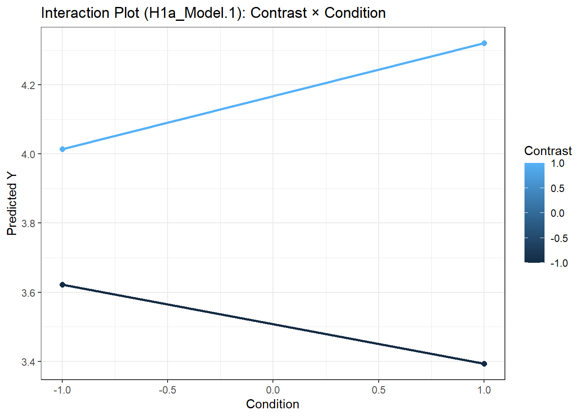
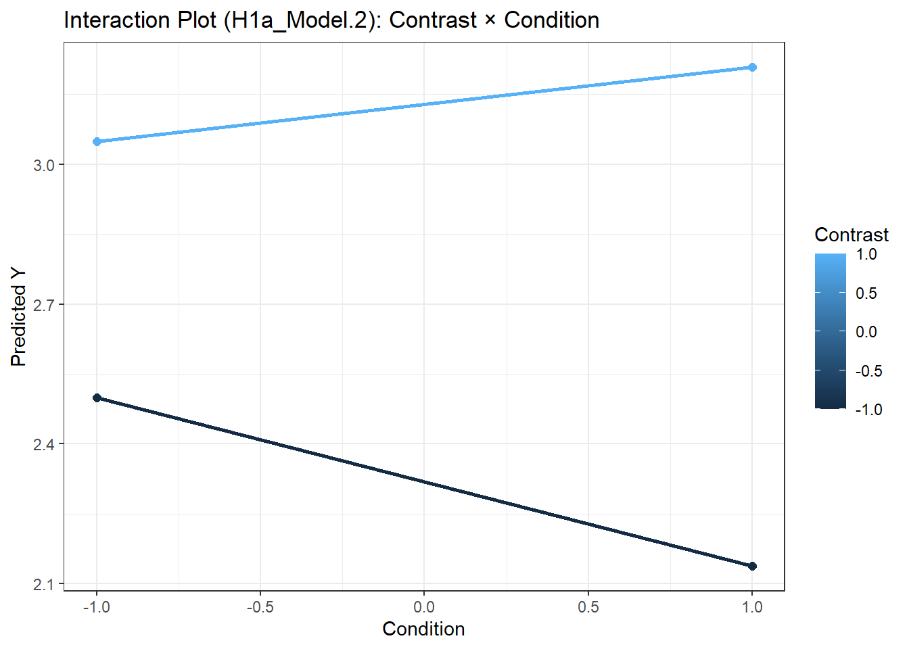
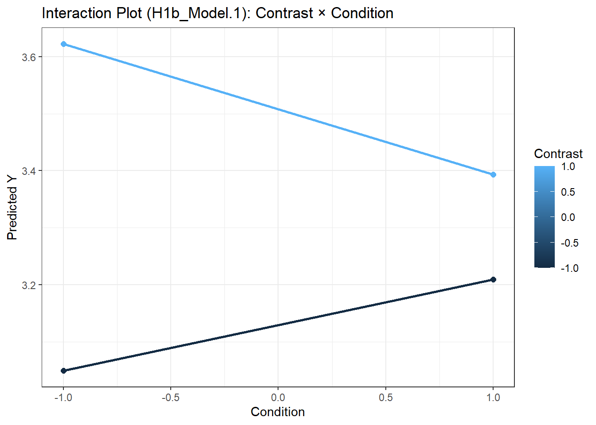

# ---- Smartness comparison 7.8 & 7.5 ----
model_list.C[["H1a_Model.1"]] <- nlme::lme(
fixed = Y ~ Condition * Contrast,
random = ~ 1 | Subject,
data = df_S_1,
method = "ML"
)
# ---- Smartness comparison 6.6 & 6.3 ----
model_list.C[["H1a_Model.2"]] <- nlme::lme(
fixed = Y ~ Condition * Contrast,
random = ~ 1 | Subject,
data = df_S_2,
method = "ML"
)
# ---- Smartness comparison 7.5 & 6.6 ----
model_list.C[["H1b_Model.1"]] <- nlme::lme(
fixed = Y ~ Condition * Contrast,
random = ~ 1 | Subject,
data = df_S_3,
method = "ML"
)tab_model(model_list.C[str_detect(names(model_list.C), "H1")],
dv.labels = names(model_list.C[str_detect(names(model_list.C), "H1")]))| H1a_Model.1 | H1a_Model.2 | H1b_Model.1 | |||||||
|---|---|---|---|---|---|---|---|---|---|
| Predictors | Estimates | CI | p | Estimates | CI | p | Estimates | CI | p |
| (Intercept) | 3.84 | 3.77 – 3.90 | <0.001 | 2.72 | 2.66 – 2.79 | <0.001 | 3.32 | 3.25 – 3.39 | <0.001 |
| Condition | 0.02 | -0.05 – 0.08 | 0.560 | -0.05 | -0.12 – 0.02 | 0.147 | -0.02 | -0.09 – 0.05 | 0.631 |
| Contrast | 0.33 | 0.27 – 0.39 | <0.001 | 0.41 | 0.34 – 0.47 | <0.001 | 0.19 | 0.12 – 0.26 | <0.001 |
| Condition × Contrast | 0.13 | 0.07 – 0.20 | <0.001 | 0.13 | 0.06 – 0.20 | <0.001 | -0.10 | -0.17 – -0.03 | 0.007 |
| Random Effects | |||||||||
| σ2 | 0.87 | 0.92 | 1.04 | ||||||
| τ00 | 0.00 Subject | 0.02 Subject | 0.00 Subject | ||||||
| ICC | 0.02 | 0.00 | |||||||
| N | 400 Subject | 400 Subject | 400 Subject | ||||||
| Observations | 800 | 800 | 800 | ||||||
| Marginal R2 / Conditional R2 | 0.127 / NA | 0.162 / 0.181 | 0.043 / 0.043 | ||||||
df_S_1$Pred <- predict(model_list.C[["H1a_Model.1"]], level = 0)
ggplot(df_S_1, aes(x = Condition, y = Pred,
color = Contrast, group = Contrast)) +
stat_summary(fun = mean, geom = "line", size = 1) +
stat_summary(fun = mean, geom = "point", size = 2) +
labs(title = "Interaction Plot (H1a_Model.1): Contrast × Condition",
y = "Predicted Y",
x = "Condition") +
theme_bw()## Warning: Using `size` aesthetic for lines was deprecated in ggplot2 3.4.0.
## ℹ Please use `linewidth` instead.
## This warning is displayed once every 8 hours.
## Call `lifecycle::last_lifecycle_warnings()` to see where this warning was generated.
df_S_2$Pred <- predict(model_list.C[["H1a_Model.2"]], level = 0)
ggplot(df_S_2, aes(x = Condition, y = Pred,
color = Contrast, group = Contrast)) +
stat_summary(fun = mean, geom = "line", size = 1) +
stat_summary(fun = mean, geom = "point", size = 2) +
labs(title = "Interaction Plot (H1a_Model.2): Contrast × Condition",
y = "Predicted Y",
x = "Condition") +
theme_bw()
# Predicted values (population level)
df_S_3$Pred <- predict(model_list.C[["H1b_Model.1"]], level = 0)
ggplot(df_S_3, aes(x = Condition, y = Pred,
color = Contrast, group = Contrast)) +
stat_summary(fun = mean, geom = "line", size = 1) +
stat_summary(fun = mean, geom = "point", size = 2) +
labs(title = "Interaction Plot (H1b_Model.1): Contrast × Condition",
y = "Predicted Y",
x = "Condition") +
theme_bw()
# ---- Similarity ----
model_list.C[["H2a_Model.1"]] <- nlme::lme(
fixed = Y ~ Condition,
random = ~ 1 | Subject,
data = df_PS_1,
method = "ML"
)
# ---- Commonality ----
model_list.C[["H2b_Model.1"]] <- nlme::lme(
fixed = Y ~ Condition,
random = ~ 1 | Subject,
data = df_PS_2,
method = "ML"
)tab_model(model_list.C[str_detect(names(model_list.C), "H2")],
dv.labels = names(model_list.C[str_detect(names(model_list.C), "H2")]))| H2a_Model.1 | H2b_Model.1 | |||||
|---|---|---|---|---|---|---|
| Predictors | Estimates | CI | p | Estimates | CI | p |
| (Intercept) | 3.41 | 3.34 – 3.48 | <0.001 | 3.45 | 3.38 – 3.51 | <0.001 |
| Condition | 0.44 | 0.37 – 0.51 | <0.001 | 0.41 | 0.34 – 0.47 | <0.001 |
| Random Effects | ||||||
| σ2 | 0.96 | 0.85 | ||||
| τ00 | 0.00 Subject | 0.05 Subject | ||||
| ICC | 0.05 | |||||
| N | 400 Subject | 400 Subject | ||||
| Observations | 800 | 800 | ||||
| Marginal R2 / Conditional R2 | 0.167 / NA | 0.154 / 0.200 | ||||
model_list.C[["H3_Model.1"]] <- nlme::lme(
fixed = Y ~ Condition,
random = ~ 1 | Subject,
data = df_C,
method = "ML"
)tab_model(model_list.C[str_detect(names(model_list.C), "H3")],
dv.labels = names(model_list.C[str_detect(names(model_list.C), "H3")]))| H3_Model.1 | |||
|---|---|---|---|
| Predictors | Estimates | CI | p |
| (Intercept) | 3.42 | 3.34 – 3.49 | <0.001 |
| Condition | 0.49 | 0.41 – 0.56 | <0.001 |
| Random Effects | |||
| σ2 | 0.93 | ||
| τ00 Subject | 0.09 | ||
| ICC | 0.08 | ||
| N Subject | 400 | ||
| Observations | 800 | ||
| Marginal R2 / Conditional R2 | 0.189 / 0.257 | ||
# ---- Internal - Smart ----
model_list.C[["H4a_Model.1"]] <- lm(Attributions_HP_1 ~ Condition, data = df_sim)
# ---- External - Luck ----
model_list.C[["H4b_Model.1"]] <- lm(Attributions_HP_3 ~ Condition, data = df_sim)tab_model(model_list.C[str_detect(names(model_list.C), "H4")],
dv.labels = names(model_list.C[str_detect(names(model_list.C), "H4")]))| H4a_Model.1 | H4b_Model.1 | |||||
|---|---|---|---|---|---|---|
| Predictors | Estimates | CI | p | Estimates | CI | p |
| (Intercept) | 4.56 | 4.46 – 4.67 | <0.001 | 4.53 | 4.43 – 4.63 | <0.001 |
| Condition | 0.57 | 0.47 – 0.67 | <0.001 | 0.45 | 0.34 – 0.55 | <0.001 |
| Observations | 400 | 400 | ||||
| R2 / R2 adjusted | 0.228 / 0.226 | 0.157 / 0.155 | ||||
# ---- Smart parents ----
model_list.C[["H5a_Model.1"]] <- lm(Stability_HP_1 ~ Condition, data = df_sim)
# ---- Early emergence ----
model_list.C[["H5b_Model.1"]] <- lm(Stability_HP_2 ~ Condition, data = df_sim)
# ---- Smart future job ----
model_list.C[["H5c_Model.1"]] <- lm(Stability_HP_3 ~ Condition, data = df_sim)tab_model(model_list.C[str_detect(names(model_list.C), "H1")],
dv.labels = names(model_list.C[str_detect(names(model_list.C), "H1")]))| H1a_Model.1 | H1a_Model.2 | H1b_Model.1 | |||||||
|---|---|---|---|---|---|---|---|---|---|
| Predictors | Estimates | CI | p | Estimates | CI | p | Estimates | CI | p |
| (Intercept) | 3.84 | 3.77 – 3.90 | <0.001 | 2.72 | 2.66 – 2.79 | <0.001 | 3.32 | 3.25 – 3.39 | <0.001 |
| Condition | 0.02 | -0.05 – 0.08 | 0.560 | -0.05 | -0.12 – 0.02 | 0.147 | -0.02 | -0.09 – 0.05 | 0.631 |
| Contrast | 0.33 | 0.27 – 0.39 | <0.001 | 0.41 | 0.34 – 0.47 | <0.001 | 0.19 | 0.12 – 0.26 | <0.001 |
| Condition × Contrast | 0.13 | 0.07 – 0.20 | <0.001 | 0.13 | 0.06 – 0.20 | <0.001 | -0.10 | -0.17 – -0.03 | 0.007 |
| Random Effects | |||||||||
| σ2 | 0.87 | 0.92 | 1.04 | ||||||
| τ00 | 0.00 Subject | 0.02 Subject | 0.00 Subject | ||||||
| ICC | 0.02 | 0.00 | |||||||
| N | 400 Subject | 400 Subject | 400 Subject | ||||||
| Observations | 800 | 800 | 800 | ||||||
| Marginal R2 / Conditional R2 | 0.127 / NA | 0.162 / 0.181 | 0.043 / 0.043 | ||||||
# ---- Internal - Smart ----
model_list.C[["H6a_Model.1"]] <- lm(Attributions_LP_1 ~ Condition, data = df_sim)
# ---- External - Luck ----
model_list.C[["H6b_Model.1"]] <- lm(Attributions_LP_3 ~ Condition, data = df_sim)tab_model(model_list.C[str_detect(names(model_list.C), "H6")],
dv.labels = names(model_list.C[str_detect(names(model_list.C), "H6")]))| H6a_Model.1 | H6b_Model.1 | |||||
|---|---|---|---|---|---|---|
| Predictors | Estimates | CI | p | Estimates | CI | p |
| (Intercept) | 4.52 | 4.42 – 4.63 | <0.001 | 4.43 | 4.32 – 4.54 | <0.001 |
| Condition | 0.50 | 0.40 – 0.61 | <0.001 | 0.57 | 0.46 – 0.68 | <0.001 |
| Observations | 400 | 400 | ||||
| R2 / R2 adjusted | 0.181 / 0.179 | 0.214 / 0.212 | ||||
# ---- Smart parents ----
model_list.C[["H7a_Model.1"]] <- lm(Stability_LP_1.R ~ Condition, data = df_sim)
# ---- Early emergence ----
model_list.C[["H7b_Model.1"]] <- lm(Stability_LP_2.R ~ Condition, data = df_sim)
# ---- Smart future job ----
model_list.C[["H7c_Model.1"]] <- lm(Stability_LP_3.R ~ Condition, data = df_sim)tab_model(model_list.C[str_detect(names(model_list.C), "H7")],
dv.labels = names(model_list.C[str_detect(names(model_list.C), "H7")]))| H7a_Model.1 | H7b_Model.1 | H7c_Model.1 | |||||||
|---|---|---|---|---|---|---|---|---|---|
| Predictors | Estimates | CI | p | Estimates | CI | p | Estimates | CI | p |
| (Intercept) | 4.49 | 4.39 – 4.60 | <0.001 | 4.49 | 4.39 – 4.59 | <0.001 | 4.44 | 4.34 – 4.54 | <0.001 |
| Condition | 0.54 | 0.43 – 0.64 | <0.001 | 0.52 | 0.42 – 0.62 | <0.001 | 0.49 | 0.39 – 0.59 | <0.001 |
| Observations | 400 | 400 | 400 | ||||||
| R2 / R2 adjusted | 0.202 / 0.200 | 0.209 / 0.207 | 0.185 / 0.183 | ||||||
In this stage, only the following exploratory analyses are worked out:
Exploratory Smartness hypothesis
Exploratory Dependent variables (Hard work - attribution & Future financial success)
Exploratory random effects
The following exploratory analyses will be worked out as part of the paper:
Exploratory Moderation analyses
Confirmatory Factor Analysis
# ---- Smartness comparison 7.5 & 6.6 ----
model_list.E[["EH_Model.1"]] <- nlme::lme(
fixed = Y ~ Condition * Contrast,
random = ~ 1 + Contrast | Subject,
data = df_S_3,
method = "ML"
)tab_model(model_list.E[str_detect(names(model_list.E), "EH")],
dv.labels = names(model_list.E[str_detect(names(model_list.E), "EH")]))| EH_Model.1 | |||
|---|---|---|---|
| Predictors | Estimates | CI | p |
| (Intercept) | 3.32 | 3.25 – 3.39 | <0.001 |
| Condition | -0.02 | -0.09 – 0.05 | 0.629 |
| Contrast | 0.19 | 0.12 – 0.26 | <0.001 |
| Condition × Contrast | -0.10 | -0.17 – -0.03 | 0.008 |
| Random Effects | |||
| σ2 | 0.13 | ||
| τ00 Subject | 0.45 | ||
| τ11 Subject.Contrast | 0.46 | ||
| ρ01 Subject | -0.00 | ||
| ICC | 0.88 | ||
| N Subject | 400 | ||
| Observations | 800 | ||
| Marginal R2 / Conditional R2 | 0.043 / 0.882 | ||
# ---- Stability - Future Financial Success ----
model_list.E[["EDV1_HP_Model.1"]] <- lm(Stability_HP_4 ~ Condition, data = df_sim)
model_list.E[["EDV1_LP_Model.1"]] <- lm(Stability_LP_4.R ~ Condition, data = df_sim)
# ---- External - Hard Work ----
model_list.E[["EDV2_HP_Model.1"]] <- lm(Attributions_HP_2 ~ Condition, data = df_sim)
model_list.E[["EDV2_LP_Model.1"]] <- lm(Attributions_LP_2 ~ Condition, data = df_sim)tab_model(model_list.E[str_detect(names(model_list.E), "EDV")],
dv.labels = names(model_list.E[str_detect(names(model_list.E), "EDV")]))| EDV1_HP_Model.1 | EDV1_LP_Model.1 | EDV2_HP_Model.1 | EDV2_LP_Model.1 | |||||||||
|---|---|---|---|---|---|---|---|---|---|---|---|---|
| Predictors | Estimates | CI | p | Estimates | CI | p | Estimates | CI | p | Estimates | CI | p |
| (Intercept) | 4.48 | 4.37 – 4.59 | <0.001 | 4.50 | 4.40 – 4.61 | <0.001 | 4.49 | 4.39 – 4.60 | <0.001 | 4.53 | 4.43 – 4.63 | <0.001 |
| Condition | 0.42 | 0.31 – 0.52 | <0.001 | 0.47 | 0.36 – 0.58 | <0.001 | 0.50 | 0.40 – 0.60 | <0.001 | 0.51 | 0.41 – 0.61 | <0.001 |
| Observations | 400 | 400 | 400 | 400 | ||||||||
| R2 / R2 adjusted | 0.131 / 0.129 | 0.159 / 0.157 | 0.190 / 0.188 | 0.196 / 0.194 | ||||||||
# ---- Similarity ----
model_list.E[["H2a_Model.1"]] <- nlme::lme(
fixed = Y ~ Condition * Contrast,
random = ~ 1 + Contrast | Subject,
data = df_PS_1,
method = "ML"
)
# ---- Commonality ----
model_list.E[["H2b_Model.1"]] <- nlme::lme(
fixed = Y ~ Condition * Contrast,
random = ~ 1 + Contrast | Subject,
data = df_PS_2,
method = "ML"
)